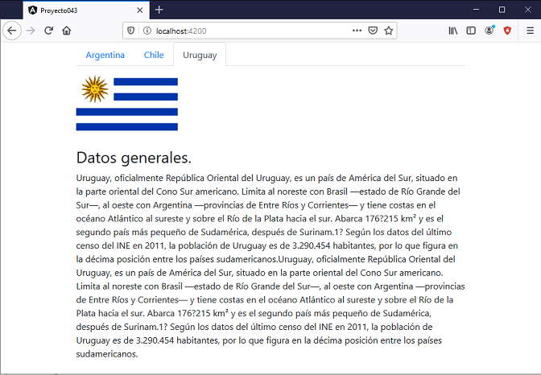

Crearemos un pequeño proyecto con la librería ng-bootstrap y en el próximo concepto crearemos el mismo proyecto pero utilizando la librería ngx-bootstrap para ver las deferencias que hay en las componentes, etiquetas, directivas etc.
Es importante notar que según la librería de Bootstrap que elijamos luego deberemos consultar constantemente su documentación para utilizarla.
Crear una aplicación que muestre mediante la componente 'nav' tres pestañas con los nombres de distintos paises, según que país se seleccione luego mostrar la bandera y datos del mismo.
Crearemos primero el proyecto
ng new proyecto043
Se sigue requiriendo el archivo de la hoja de estilo bootstrap.css, así que lo primero que debemos hacer referencia al mismo, recordemos que tenemos tres formas de hacerlo, la forma más sencilla es mediante CDN indicando en el archivo index.html:
<link rel="stylesheet" href="https://stackpath.bootstrapcdn.com/bootstrap/4.4.1/css/bootstrap.min.css">
Las otras dos formas que ya vimos son localizandolo en la capeta 'assets' o mediante npm.
En segundo paso instalamos el módulo de ng-bootstrap mediante el administrador de paquetes de Node.JS:
npm install --save @ng-bootstrap/ng-bootstrap
También debemos instalar el módulo:
ng add @angular/localize
Modificamos el archivo 'app.module.ts' agregando el módulo 'NgbModule':
import { BrowserModule } from '@angular/platform-browser';
import { NgModule } from '@angular/core';
import { AppComponent } from './app.component';
import { NgbModule } from '@ng-bootstrap/ng-bootstrap';
@NgModule({
declarations: [
AppComponent
],
imports: [
BrowserModule,
NgbModule
],
providers: [],
bootstrap: [AppComponent]
})
export class AppModule { }
Copiamos las tres imágenes de las banderas a la carpeta assets/imagenes/
Modificamos el archivo 'app.component.html':
<div class="container">
<div class="row">
<div class="col-12">
<ul ngbNav #nav="ngbNav" class="nav-tabs">
<li [ngbNavItem]="1">
<a ngbNavLink>Argentina</a>
<ng-template ngbNavContent>
<p>
<img src="assets/imagenes/argentina.png">
</p>
<h3>Datos generales.</h3>
<p>Argentina, llamada oficialmente República Argentina, es un país soberano de América del Sur, ubicado en el extremo
sur y sudeste de dicho subcontinente. Adopta la forma de gobierno republicana, democrática, representativa y
federal.</p>
<p>La Argentina está organizada como un Estado federal descentralizado, integrado desde 1994 por un Estado nacional y
24 estados autogobernados, siendo estos sus 23 provincias sumada la ciudad autónoma de Buenos Aires designada
como Capital Federal del país. Cada estado tiene autonomía política, constitución, bandera y cuerpo de seguridad
propios. Las 23 provincias mantienen todos los poderes no delegados al Estado nacional y garantizan la
autonomía
de sus municipios.</p>
</ng-template>
</li>
<li [ngbNavItem]="2">
<a ngbNavLink>Chile</a>
<ng-template ngbNavContent>
<p>
<img src="assets/imagenes/chile.png">
</p>
<h3>Datos generales.</h3>
<p>Chile es un país de América ubicado en el extremo sudoeste de América del Sur. Su nombre oficial es República
de Chile y su capital es la ciudad de Santiago. Primer país sudamericano en ingresar a la Organización para la
Cooperación y el Desarrollo Económicos, Chile es una de las economías de América Latina que más ha crecido desde
mediados de la década de 1980.</p>
<p>Antes del descubrimiento de América, las tierras situadas al sur del desierto de Atacama ya se llamaban
Chili en la tradición indígena. Una vez instalados en Nueva Castilla y Nueva Toledo, los conquistadores españoles
siguieron llamando de esa forma a la región del sur, a veces también conocida como «valle de Chile», nombre que se
extendió
posteriormente a todo el actual país.</p>
</ng-template>
</li>
<li [ngbNavItem]="3">
<a ngbNavLink>Uruguay</a>
<ng-template ngbNavContent>
<p>
<img src="assets/imagenes/uruguay.png">
</p>
<h3>Datos generales.</h3>
<p>Uruguay, oficialmente República Oriental del Uruguay, es un país de América del Sur, situado en la parte
oriental del Cono Sur americano. Limita al noreste con Brasil —estado de Río Grande del Sur—, al oeste con Argentina
—provincias de Entre Ríos y Corrientes— y tiene costas en el océano Atlántico al sureste y sobre el Río de la Plata
hacia el sur. Abarca 176?215 km² y es el segundo país más pequeño de Sudamérica, después de Surinam.1? Según los
datos del último censo del INE en 2011, la población de Uruguay es de 3.290.454 habitantes, por lo que figura en la
décima posición entre los países sudamericanos.Uruguay, oficialmente República Oriental del Uruguay, es un país
de América del Sur, situado en la parte oriental del Cono Sur americano. Limita al noreste con Brasil —estado de Río
Grande del Sur—, al oeste con Argentina —provincias de Entre Ríos y Corrientes— y tiene costas en el océano
Atlántico al sureste y sobre el Río de la Plata hacia el sur. Abarca 176?215 km² y es el segundo país más pequeño de
Sudamérica, después de Surinam.1? Según los datos del último censo del INE en 2011, la población de Uruguay es de
3.290.454 habitantes, por lo que figura en la décima posición entre los países sudamericanos.
</p>
</ng-template>
</li>
</ul>
<div [ngbNavOutlet]="nav" class="mt-2"></div>
</div>
</div>
</div>
Las etiquetas, directivas que utilizan las componentes de 'ng-bootstrap' las puede consultar aquí.
Si ejecutamos la aplicación tenemos como resultado:
Podemos probar esta aplicación en la web aquí.
Tengamos en cuenta que hemos presentado este ejemplo solo a efectos de conocer como confeccionar un proyecto utilizando la librería 'ng-bootstrap', si queremos realmente aprender dicha librería debemos visitar el sitio oficial y estudiar su documentación.